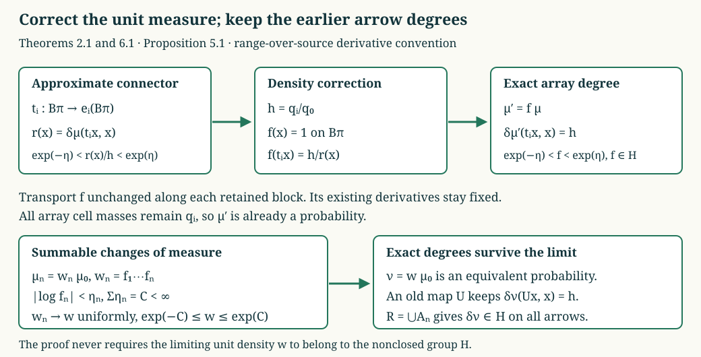

Type III₁ normalization by weighted arrays
We construct the missing equivalent probability for a hyperfinite type \(\mathrm{III}_1\) measured relation. Its modulus has the prescribed dense degree group and an ergodic kernel. The construction also gives a measured isomorphism with the corresponding Bernoulli tail relation.
The corrections must satisfy two different requirements. They are small enough that their product converges to a positive density, and they preserve every array map already constructed. The latter condition makes the limiting modulus take exact values in the prescribed group, even though that group is not closed.
Let \(R\) be an ergodic countable standard Borel equivalence relation with a nonzero sigma-finite nonsingular measure. Assume that \(R\) is hyperfinite and has ratio set \([0,\infty)\). These properties and their measure-class invariance are proved in 1. What finite approximation means and 1. Real ratio sets and equivalent measures. In particular the space is nonatomic: the atomic ergodic case has ratio set \(\{1\}\), by RPR-01.
Fix a finite vector of strictly positive probabilities \(p=(p_0,\ldots,p_{d-1})\), \(d\ge2\), such that
\[ H=\langle p_i/p_0:0\le i<d\rangle \quad\hbox{is dense in }\mathbb R_+^\times. \tag{NME.1} \]It is countable. The proved countable-range reweighting theorem 5. Reweighting the modulus into a countable group supplies an equivalent probability \(\mu_0\) whose modulus takes values in \(H\). We do not assume that its kernel is ergodic, or that all elements of \(H\) occur.
Our derivative convention is
\[ \mu(TA)=\int_A\delta_\mu(Tx,x)\,d\mu(x). \tag{NME.2} \]The measure-change formula 3. Unitary transport between equivalent measures is
\[ \delta_{f\mu}(y,x)=\frac{f(y)}{f(x)}\delta_\mu(y,x). \tag{NME.3} \]All maps and identities are considered on conull Borel models. Countable partial graph presentations and removal of null saturations are 2. Countable presentations and null saturation. The atomless coordinate and set-division proof is 1. Atomless coordinates and finite weighted patterns.
1. Onto matchings with a controlled derivative
We first work with any equivalent probability \(\mu\); its modulus need not be \(H\)-valued.
Lemma 1.1. For positive sets \(A,B\), a number \(h>0\), and \(\eta>0\), there is a positive-domain partial orbit bijection from a subset of \(A\) into \(B\) whose derivative lies in
\[ (he^{-\eta},he^\eta). \tag{NME.4} \]Proof. Ergodicity and the countable graph presentation give a partial orbit bijection \(T:D\to T(D)\subset B\) with \(D\subset A\) positive. Restrict \(D\) to a positive derivative band
\[ se^{-\eta/3}<\delta_\mu(Tx,x)<se^{\eta/3} \]for some \(s>0\). Such bands, with countably many choices of \(s\), cover the positive real axis. The ratio-set condition, applied inside \(D\) at \(h/s\), gives a positive-domain map \(Q:E\to Q(E)\), with \(E,Q(E)\subset D\), whose derivative lies between \((h/s)e^{-\eta/3}\) and \((h/s)e^{\eta/3}\). Then \(TQ\) has source in \(A\), range in \(B\), and derivative in (NME.4), by the cocycle identity. \(\square\)
Theorem 1.2 (approximate homogeneous matching). If \(A,B\) are positive and \(h=\mu(B)/\mu(A)\), then for every \(\eta>0\) there is an onto partial orbit bijection \(T:A\to B\), modulo null sets, satisfying (NME.4) almost everywhere.
Proof. Put
\[ \alpha=he^{-\eta},\quad a=he^{-\eta/2},\quad b=he^{\eta/2},\quad\beta=he^\eta. \tag{NME.5} \]We build disjoint-domain, disjoint-range partial matchings, always with derivative in \((\alpha,\beta)\). Let \(A_n,B_n\) be the unused sets after stage \(n\), beginning with \(A_0=A,B_0=B\). Maintain
\[ a\mu(A_n)\le\mu(B_n)\le b\mu(A_n). \tag{NME.6} \]Call an extension admissible when its removal preserves (NME.6). At each stage take an admissible extension whose domain has measure greater than half the supremum of the possible extension-domain measures, if that supremum is positive. If it is zero take the empty extension. This is a choice of countably many individual measurable maps, not a parameter-dependent measurable selection. The empty map is always admissible.
Here is the local observation that forces the construction to cover both sets. Suppose unused sets \(C,D\) have positive masses with \(\kappa=\mu(D)/\mu(C)\in[a,b]\). There is a positive extension, with derivative in \((\alpha,\beta)\), for which both residual masses remain positive and their ratio is strictly between \(a\) and \(b\). If \(\kappa\in(a,b)\), use Lemma 1.1 and restrict its domain to a sufficiently small positive set. If \(\kappa=a\), choose its derivative in a closed interval strictly between \(\alpha\) and \(a\). Removing that map raises the residual ratio. If \(\kappa=b\), choose the derivative strictly between \(b\) and \(\beta\); removing it lowers the ratio. In the endpoint cases a sufficiently small domain keeps the new ratio below the opposite endpoint. Atomlessness permits the required restriction. The bounds on the derivative control the removed range mass by the removed domain mass, so these assertions follow directly from
\[ \frac{\mu(D)-\int_E\delta_\mu(Tx,x)\,d\mu(x)} {\mu(C)-\mu(E)}. \tag{NME.7} \]Take the union of the successive matchings. It is a Borel partial bijection with derivative in \((\alpha,\beta)\). Its residual sets \(A_\infty,B_\infty\) still satisfy (NME.6), by continuity of finite measures. If either has zero measure, both do.
Otherwise apply the local observation to the limiting residual sets. It gives an extension \(V\), with domain measure \(c>0\), such that the ratio after its removal is strictly in \((a,b)\). Its domain and range are unused at every finite stage. The finite-stage residual masses converge to the limiting masses, so this same \(V\) is admissible at every sufficiently late stage. The supremum of extension-domain measures is then at least \(c\) at each such stage, forcing the construction to use more than \(c/2\) of new domain mass each time. This contradicts finiteness of \(\mu(A)\). Thus both residual sets are null, proving the theorem. \(\square\)
The residual-ratio condition is essential in this argument. An arbitrary greedy matching with derivatives merely bounded near \(h\) need not preserve the correct balance of the unused sets.
2. A small density correction that realizes an array
Assume that \(\delta_\mu\) is \(H\)-valued. Let an external measured array have cells \(A_0,\ldots,A_{N-1}\) of masses \(q_i>0\), \(\sum_iq_i=1\), and maps
\[ e_i:A_0\to A_i,\qquad e_0=\mathrm{id},\qquad \delta_\mu(e_i x,x)=q_i/q_0\in H. \tag{NME.8} \]Its maps may leave \(R\). Write \(E\) for its finite equivalence relation, and let \(S\subset E\cap R\) be a full-unit Borel subrelation.
Theorem 2.1 (small relative realization). For every \(\eta>0\), there are a probability \(\mu'=f\mu\) and an array \(A\subset R\) with the same cells, such that
\[ \begin{gathered} f:X\to H,\qquad e^{-\eta}<f<e^\eta,\qquad f(y)=f(x)\quad((y,x)\in S),\\ \mu'(A_i)=\mu(A_i)=q_i,\qquad S\subset A,\qquad \delta_{\mu'}(U_{ij}x,x)=q_i/q_j. \end{gathered} \tag{NME.9} \]In particular the modulus remains \(H\)-valued on all of \(R\), and every \(S\)-arrow retains its previous derivative.
Proof. As in the relative realization proof 3. Realizing a measured array by orbit maps, partition \(A_0\) into the finitely many Borel pieces \(B_\pi\), where the partition \(\pi\) of \(\{0,\ldots,N-1\}\) records
\[ i\sim_\pi j\quad\Longleftrightarrow\quad(e_i x,e_j x)\in S. \]For each block \(I\) choose a representative \(i_I\), choosing zero for the block containing zero. Theorem 1.2 supplies an onto orbit map
\[ t_I:B_\pi\to e_{i_I}(B_\pi),\qquad h_Ie^{-\eta}<\delta_\mu(t_Ix,x)<h_Ie^\eta,\quad h_I=q_{i_I}/q_0. \tag{NME.10} \]For the zero block take the identity. Define on \(B_\pi\)
\[ v_j=e_j e_{i_I}^{-1}t_I\quad(j\in I). \tag{NME.11} \]The first part has graph in \(S\), so \(v_j\) has graph in \(R\). The maps join over all \(\pi\) to onto maps \(v_j:A_0\to A_j\), with \(v_0=\mathrm{id}\). They form an orbit array \(U_{jk}=v_jv_k^{-1}\), and connector cancellation proves \(S\subset A\), exactly as in GWA-03.
Define the density by its values on these sheets:
\[ f(v_jx)=\frac{q_j/q_0}{\delta_\mu(v_jx,x)} =\frac{h_I}{\delta_\mu(t_Ix,x)} \quad(x\in B_\pi,\ j\in I). \tag{NME.12} \]The sheets are disjoint and the maps are bijections, so this is a well-defined Borel function. It is \(H\)-valued because \(h_I\in H\) and \(t_I\) is an orbit map with \(H\)-valued derivative. Equation (NME.10) gives its uniform bounds. It is one on \(A_0\).
For a fixed old block, points \(e_jz,e_kz\), \(j,k\in I\), use the same argument \(t_I^{-1}(e_{i_I}z)\) in the last expression in (NME.12). Thus \(f(e_jz)=f(e_kz)\), proving \(S\)-invariance. Also, for every measurable \(C\subset A_0\),
\[ \mu'(v_jC) =\int_C f(v_jx)\delta_\mu(v_jx,x)\,d\mu(x) =\frac{q_j}{q_0}\mu(C) =\frac{q_j}{q_0}\mu'(C). \tag{NME.13} \]Taking \(C=A_0\) gives \(\mu'(A_j)=q_j\). Hence \(\mu'\) is already a probability; no further normalizing constant is needed. Equation (NME.13) gives the array degrees. Finally (NME.3) proves \(H\)-valuedness on all of \(R\) and preservation of the \(S\)-derivatives. \(\square\)
3. Finite approximation without an ergodic kernel
A \(p\)-array of order \(n\) has cells indexed by length-\(n\) words \(u\), of masses \(p(u)=\prod_{k=1}^np_{u_k}\), and matrix maps of degrees \(p(u)/p(v)\).
Theorem 3.1. Suppose \(\delta_\mu\) is \(H\)-valued. Given a full-unit finite subrelation \(F\subset R\), finitely many measurable sets \(D_j\), and \(\varepsilon,\eta>0\), there are \(\mu'=f\mu\) and a \(p\)-array \(A\subset R\) for \(\mu'\) such that
\[ f:X\to H,\quad e^{-\eta}<f<e^\eta,\qquad \mu\{x:[x]_F\not\subset[x]_A\}<\varepsilon. \tag{NME.14} \]Every \(D_j\) is within \(\varepsilon\), measured by \(\mu\), of a union of the new cells. Each new cell has the same prescribed mass for \(\mu\) and \(\mu'\).
Proof. We use the finite-pattern construction in GWA-01–02, with its exact inputs made explicit. Decompose \(F\) into countably many finite towers by class size and the ordered tuple of \(H\)-valued derivatives from a chosen base. On a tower with base mass \(b_t\), its sheet masses are \(h_{t,i}b_t\). They sum to one over all towers and sheets.
In the explicit Bernoulli tail relation \((Y,\nu,T)\) for \(p\), the kernel is ergodic and the actual degree group is \(H\), by 5. Bernoulli kernels and their actual degree group. Divide \(Y\) into sets with these sheet masses. Homogeneous matching in this Bernoulli model, proved in 3. Exact matching from an ergodic kernel, copies each tower. Measure-preserving isomorphisms of the nonatomic bases, followed by the tower maps, give
\[ \Phi:(X,\mu)\to(Y,\nu),\qquad \Phi F\Phi^{-1}\subset T. \tag{NME.15} \]This is exactly the proof of GWA-02; it uses no ergodicity of the source modulus kernel and no occurrence of all \(H\)-degrees in the source relation.
Pull back the length-\(n\) prefix array of \(Y\) through \(\Phi\), obtaining an external array \(E_n\). Its cell masses and degrees have the required product form. Since \(E_n\uparrow\Phi^{-1}T\Phi\) and every \(F\)-class is finite, the probability that an entire \(F\)-class is not contained in its \(E_n\)-class tends to zero. Cylinder approximation, proved in 2. A dense ratio range with a nonergodic discrete extension, also makes all the sets \(\Phi(D_j)\) close to length-\(n\) cylinder unions. Choose one sufficiently large \(n\) for all these bounds.
Apply Theorem 2.1 to \(E_n\) and \(S=E_n\cap F\). It leaves the cells and their masses unchanged, and retains every \(S\)-arrow. Thus it retains each whole \(F\)-class already contained in an \(E_n\)-class. This proves all the assertions. The conull restriction for the pulled-back prefix maps is the one described after GWA-02. \(\square\)
Neither hyperfiniteness nor an ergodic source kernel was used in this finite-approximation theorem. Hyperfiniteness enters the compatible refinement below.
4. Refinement while preserving earlier derivatives
Assume \(\mu\) is a probability with \(H\)-valued modulus, and a \(p\)-array of order \(k\) has already been constructed with its exact prescribed degrees. Write its cells as \(A_v\), their masses as \(q_v=p(v)\), fix a base word \(o\), and put
\[ B=A_o,\qquad a_v=U_{vo}:B\to A_v,\qquad \deg_\mu a_v=q_v/q_o. \tag{NME.16} \]Theorem 4.1. Given finite \(F\subset R\), finitely many sets \(D_j\) and \(\varepsilon,\eta>0\), there is a probability \(\mu'=f\mu\) with
\[ f:X\to H,\qquad e^{-\eta}<f<e^\eta, \tag{NME.17} \]and a \(p\)-array of order \(k+\ell\), \(\ell\ge1\), which refines the old cells and maps exactly. The density \(f\) is invariant on the old array, all old cells retain their masses, and all old maps retain their derivatives. The new array contains the whole \(F\)-class outside a set of \(\mu\)-measure less than \(\varepsilon\); its cell unions approximate each \(D_j\) with the same error.
Proof. Equip \(B\) with probability \(\mu_B=\mu|_B/q_o\). The reduction \(R|_B\) remains ergodic: two positive subsets of \(B\) are joined on positive parts by a partial \(R\)-map, whose restricted graph belongs to \(R|_B\). It still has every positive ratio value, since every positive test set in \(B\) is a test set in \(X\). Its modulus is the restriction of \(\delta_\mu\), so remains \(H\)-valued. A finite exhaustion of \(R\), intersected with \(B\times B\), gives a finite exhaustion \(L_m\uparrow R|_B\).
For \(x\in A_v\) and \(y\in[x]_F\cap A_u\), consider
\[ (a_u^{-1}y,a_v^{-1}x)\in R|_B. \tag{NME.18} \]There are finitely many such \(y\) for each \(x\). Choose \(m\) so that, except on a set of \(\mu\)-measure less than \(\varepsilon/2\), all these projected pairs belong to \(L_m\). This follows by continuity from above, as in GWA-05. It does not assert that the union of two finite relations generates a finite relation.
Apply Theorem 3.1 in \(B\) to \(L_m\) and to all the sets \(a_v^{-1}(D_j\cap A_v)\). Take the class error below \(\varepsilon/2\), each set error below \(\varepsilon\), and the density bound \(\eta\), with respect to \(\mu_B\). It gives \(\mu'_B=g\mu_B\) and an order-\(\ell\) base array \(V\), \(\ell\ge1\), with cells \(C_w\). Lift the density and array:
\[ \begin{split} f(a_vx)&=g(x),\\ A^{\mathrm{new}}_{v,w}&=a_v(C_w),\\ U^{\mathrm{new}}_{(u,w),(v,z)}&=a_uV_{wz}a_v^{-1}. \end{split} \tag{NME.19} \]The definition makes \(f\) invariant under the old maps, and (NME.17) holds. Furthermore
\[ \int_{A_v}f\,d\mu =\frac{q_v}{q_o}\int_Bg\,d\mu=q_v. \tag{NME.20} \]Thus \(f\mu\) is a probability, and its normalized restriction to \(B\) is \(\mu'_B\). Formula (NME.3) retains the old degrees; consequently (NME.19) has cell masses \(q_vp(w)\) and degrees \(q_up(w)/(q_vp(z))\) for \(\mu'\). Cancellation proves the matrix laws and exact old-map refinement.
Let \(N\subset B\) be the bad base set for the \(L_m\)-class approximation. Its lifts have total old measure
\[ \sum_v\mu(a_vN)=\sum_vq_v\mu_B(N) =\mu_B(N)<\varepsilon/2. \tag{NME.21} \]Outside those lifts and the exceptional set for (NME.18), every \(F\)-arrow is supplied by (NME.19). The total class error is less than \(\varepsilon\). Lifting the base cell unions that approximate \(a_v^{-1}(D_j\cap A_v)\) gives total set error less than \(\sum_vq_v\varepsilon=\varepsilon\). \(\square\)
5. Convergent probabilities and stable old maps
Choose positive sequences \(\eta_n,\varepsilon_n\) with
\[ C=\sum_{n\ge1}\eta_n<\infty,\qquad \varepsilon_n=2^{-n}. \tag{NME.22} \]Fix a finite exhaustion \(F_n\uparrow R\) and a countable Borel generating family \(D_1,D_2,\ldots\). Begin with the probability \(\mu_0\) chosen above and its one-cell order-zero array. At stage \(n\), apply Theorem 4.1 to the old array, \(F_n\), and \(D_1,\ldots,D_n\), with errors \(\varepsilon_n\) and density bound \(\eta_n\). Write
\[ \mu_n=f_n\mu_{n-1},\qquad w_n=\prod_{j=1}^nf_j,\qquad \mu_n=w_n\mu_0. \tag{NME.23} \]Each \(\mu_n\) is a probability with \(H\)-valued modulus; each new array refines every earlier one exactly. Later densities are invariant under all earlier array maps.
Proposition 5.1. There is a probability \(\nu=w\mu_0\) such that
\[ \begin{gathered} w_n\longrightarrow w\ \hbox{uniformly},\qquad e^{-C}\le w\le e^C,\\ e^{-s_n}\le\frac{d\nu}{d\mu_n}\le e^{s_n}, \qquad s_n=\sum_{j>n}\eta_j\longrightarrow0. \end{gathered} \tag{NME.24} \]Every array cell and map retains its prescribed mass and degree for \(\nu\).
Proof. The series \(\sum_j\log f_j\) converges uniformly and absolutely, by the uniform bound \(|\log f_j|<\eta_j\). Exponentiation on the bounded interval \([-C,C]\) gives the uniform convergence and bounds. Since \(\int w_n\,d\mu_0=1\), uniform convergence gives \(\int w\,d\mu_0=1\). The quotient \(w/w_n\) is the limiting tail product, giving the last bounds in (NME.24).
Fix an array map \(U\) introduced at stage \(m\), of degree \(h\). For \(n\ge m\), the measure-change formula and invariance of every later density give
\[ \frac{w_n(Ux)}{w_n(x)}\delta_{\mu_0}(Ux,x)=h \tag{NME.25} \]on its domain. Take the limit in the positive unit densities to obtain the same identity with \(w\), hence degree \(h\) for \(\nu\). There are only countably many maps, so their identities hold simultaneously after removal of a null saturation. Every old cell has its prescribed mass for all \(n\ge m\); integrating \(w_n\to w\) over that cell proves the same mass for \(\nu\). \(\square\)
We have not asserted \(w(x)\in H\). That would not follow from convergence of the \(H\)-valued partial products, because \(H\) is not closed. The limiting modulus will be \(H\)-valued because the fixed array arrows exhaust the relation.

The first line depicts (NME.10)–(NME.13): \(r(x)\) is the derivative of an onto connector and \(h\) is its target degree. The density is constant along each retained block. The second line depicts (NME.23)–(NME.25): the unit densities converge, while previously constructed arrow degrees are fixed exactly.
6. Both exhaustions and the address isomorphism
Let \(A_n\) be the array relation constructed at stage \(n\), of order \(k_n\). The orders strictly increase.
Theorem 6.1. For the probability \(\nu\) in Proposition 5.1, the arrays generate the completed measurable sigma-algebra and, on an invariant conull set,
\[ R=\bigcup_nA_n. \tag{NME.26} \]The address map is a measure-preserving isomorphism
\[ (X,\nu,R)\cong \left(\{0,\ldots,d-1\}^{\mathbb N}, \bigotimes_{j\ge1}p,\ T\right), \tag{NME.27} \]where \(T\) is eventual equality.
Proof. Stage \(n\)'s approximation errors were measured by \(\mu_{n-1}\), so (NME.24) bounds each corresponding \(\nu\)-error by \(e^C\varepsilon_n\). For fixed \(j\) and \(n\ge j\),
\[ \nu\{x:[x]_{F_j}\not\subset[x]_{A_n}\} <e^C2^{-n}. \tag{NME.28} \]These bad sets decrease with \(n\), because \(A_n\) increases. Their intersection is null. Removing the union of these exceptional sets over \(j\), and its \(R\)-saturation, gives (NME.26).
For each \(D_j\), let \(C_{j,n}\) be its approximating cell union at stage \(n\ge j\). Then
\[ \sum_{n\ge j}\nu(D_j\triangle C_{j,n}) \le e^C\sum_{n\ge j}2^{-n}<\infty. \tag{NME.29} \]The measure of the union of errors after stage \(N\) tends to zero, by this tail bound. Thus their indicators eventually agree almost everywhere. Each \(D_j\) belongs to the completed sigma-algebra generated by the cells. Since the \(D_j\) generate the Borel sets, this proves measurable generation.
For completeness, the address argument uses only these properties and the product masses; no ergodic-kernel assumption enters it. Fill any skipped word lengths by taking unions of cells with equal shorter prefixes and the equal-suffix restrictions of the next array's maps. Exact refinement makes these levels compatible, and summing the suffix probabilities gives the shorter product masses, as in 6. Constructing the generating arrays.
Assign each point its infinite sequence of cell labels. This is a Borel map \(\Psi\), and its cylinder probabilities are \(p(u)\). Cylinder approximation identifies the image measure with \(\bigotimes p\). Measurable generation implies that each member of a countable Borel separating family agrees modulo a null set with a preimage under \(\Psi\) of a Borel sequence-space set. After removing those countably many exceptions and their \(R\)-saturation, equal addresses imply equal points. The injective Borel image theorem recorded in 1. Objects and the existing symmetry proofs supplies a Borel inverse onto the conull image.
Every level map changes just a finite prefix and keeps all later labels, by the exact refinement identities. Equation (NME.26) therefore sends every \(R\)-arrow to an eventual-equality pair. Conversely, for two addresses agreeing after level \(k\), apply the level-\(k\) prefix map to the first point to give it the second point's prefix. The resulting point has the entire second address; injectivity identifies it with the second point. All prefix maps act inside the retained invariant set, so the image is invariant under finite prefix changes. This proves both directions of (NME.27). \(\square\)
7. Exact normalization and type III₁ uniqueness
Theorem 7.1 (prescribed normalization). Every ergodic hyperfinite countable standard Borel measured relation of type \(\mathrm{III}_1\), with nonzero sigma-finite unit measure, admits an equivalent probability \(\nu\) such that
\[ \delta_\nu(R)\subset H,\qquad \ker\delta_\nu\ \hbox{is ergodic},\qquad S_\nu=H, \tag{NME.30} \]for every \(H\) of the form (NME.1). Here \(S_\nu\) denotes the degrees occurring on positive-domain partial orbit maps. The relation with this probability is isomorphic to the Bernoulli model in (NME.27).
Proof. The construction applies after the equivalent \(H\)-valued probability from CLR-05. Proposition 5.1 makes its limit equivalent, so the original sigma-finite measure class is retained.
Every arrow on the conull relation belongs to an array by (NME.26), and its unchanged degree is a word ratio \(p(u)/p(v)\in H\). Hence the limiting modulus is \(H\)-valued. Every element of \(H\) is a ratio of two equally long word probabilities: concatenate the single-letter replacements generating \(H\) and their reverses. The corresponding prefix map has positive domain, so every element occurs. No other degree can occur.
Under (NME.27), finite coordinate permutations have derivative one, since they retain the multiplicity of each letter. Their invariant events have probability zero or one by the complete finite-permutation proof in RPR-05. Consequently any invariant event for the modulus kernel has probability zero or one. This proves kernel ergodicity and all of (NME.30). \(\square\)
For \(0<\lambda_1,\lambda_2<1\) with \(\log\lambda_1/\log\lambda_2\notin\mathbb Q\), take
\[ H=\lambda_1^{\mathbb Z}\lambda_2^{\mathbb Z}, \qquad p=\frac{(1,\lambda_1,\lambda_2)} {1+\lambda_1+\lambda_2}. \tag{NME.31} \]Density of \(H\) follows from the explicit pigeonhole argument in 3. The full irrational product theorem. Thus Theorem 7.1 proves the strengthened normalization required in Takesaki, Theory of Operator Algebras III, XVIII.4, Lemma 4.24, p.397. It proves actual occurrence of both chosen generators as well as the stated ergodic-kernel and value-containment properties.
Corollary 7.2. For this normalized probability, the inverse images of \(\lambda_i^{\mathbb Z}\) under the modulus are ergodic hyperfinite relations of type \(\mathrm{III}_{\lambda_i}\), \(i=1,2\).
Proof. Apply the proved cyclic-reduction theorem 6. The exact type of a cyclic inverse image. Its ratio set is the closure in \([0,\infty)\) of \(S_\nu\cap\lambda_i^{\mathbb Z}\). By (NME.30), this is \(\{0\}\cup\lambda_i^{\mathbb Z}\). Kernel ergodicity gives ergodicity of the reduction, and intersection with a finite exhaustion proves hyperfiniteness. \(\square\)
This supplies the additional generator-occurrence hypothesis needed in the source's Lemma 4.25. It does not validate that lemma for every probability having only the weaker written properties of Lemma 4.24; the counterexample in 7. Two cyclic reductions with smaller degree groups remains valid.
Corollary 7.3 (measured-groupoid uniqueness). All ergodic principal orbitally countable measured AF groupoids of type \(\mathrm{III}_1\), on nonzero standard sigma-finite spaces, are isomorphic as measured groupoids.
Proof. GMB-02 identifies each principal groupoid with its countable Borel relation, and 1. What finite approximation means and 4. The dyadic criterion and the whole measured model identify the source's AF convention with the finite-exhaustion convention used here. Choose the same pair, for example \(\lambda_1=1/2\), \(\lambda_2=1/3\), for both groupoids. Their logarithm ratio is irrational by unique prime factorization. Apply Theorem 7.1 to both and compose their measure-preserving isomorphisms to the common Bernoulli model. The resulting point isomorphism preserves the original measure classes, and its endpoint map sends precisely the arrows of one principal groupoid to the other. \(\square\)
This proves Takesaki XVIII.4, Theorem 4.23(ii), pp.396–398, without assuming either the initial ergodic kernel or the two generating exhaustions. The irrational-product assertion in part (i) is already proved at full measured-groupoid scope in RPR-01–03. These statements concern measured groupoids and their measure classes; they do not assert preservation of two arbitrarily prescribed original unit measures.
8. Worked problems
Problem 1. Why does Theorem 1.2 not simply enumerate all almost-homogeneous partial graphs and use every available part?
Solution. Such a choice can alter the ratio of unused range mass to unused domain mass. Bounds on individual derivatives alone do not prevent exhaustion of one side first. The invariant interval (NME.6) forces the two limiting residual masses to vanish together. The strict interior after a small residual extension makes that same extension admissible at every sufficiently late finite stage, which is the step needed for the supremum argument.
Problem 2. A connector \(t:B\to C\) has derivative \(r(x)\) close to \(h=\mu(C)/\mu(B)\). Which density makes its new derivative exactly \(h\)?
Solution. Leave the source density equal to one and set
\[ f(tx)=h/r(x). \]Then \(\delta_{f\mu}(tx,x)=f(tx)r(x)=h\). On a retained array block, transport this same density to every point of that block. This is (NME.12); it preserves the old block derivatives and yields \(\mu'(A_i)=q_i\), so no extra normalization disturbs the mass calculation.
Problem 3. Why is convergence of \(H\)-valued densities not enough to prove that the limiting modulus is \(H\)-valued?
Solution. A dense proper subgroup is not closed, so a convergent sequence of its elements can converge outside it. The proof instead fixes each array arrow's derivative at a finite stage and preserves it thereafter. Arrow exhaustion then covers the whole relation by those stabilized maps. The limit is taken only in the unit densities in (NME.25), while the arrow degree on the right is already fixed.
Problem 4. What has been added to the earlier normalized isomorphism theorem?
Solution. The source relation initially has neither an assumed ergodic modulus kernel nor an assumed full actual degree group. CLR-05 supplies only value containment in \(H\). Theorems 1.2–4.1 replace exact source matchings by approximate matchings followed by small \(H\)-valued density corrections. The convergent refinement constructs the measure, both generating exhaustions, and the common model. The kernel and exact occurrence conclusions then follow from that model, rather than being used to construct it.